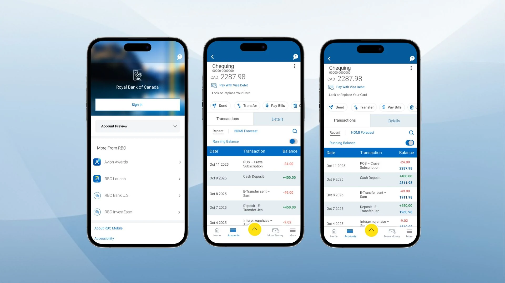
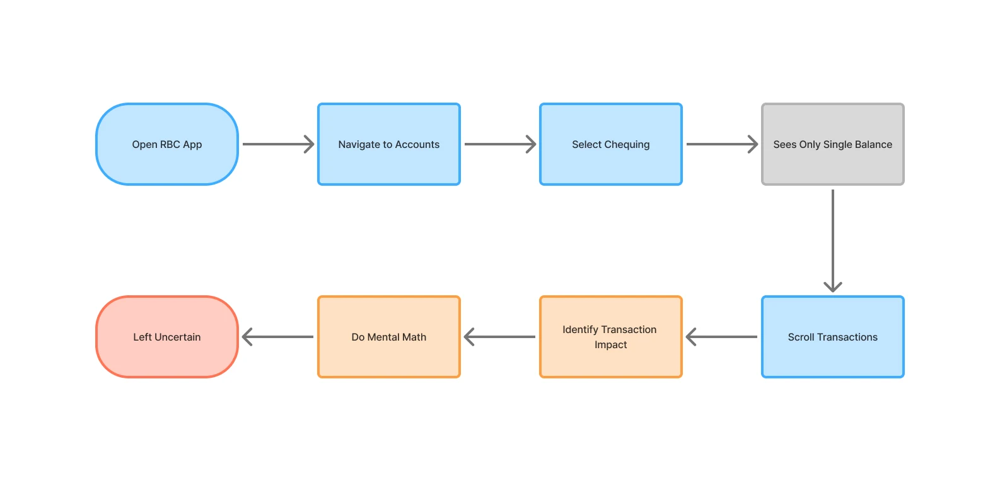
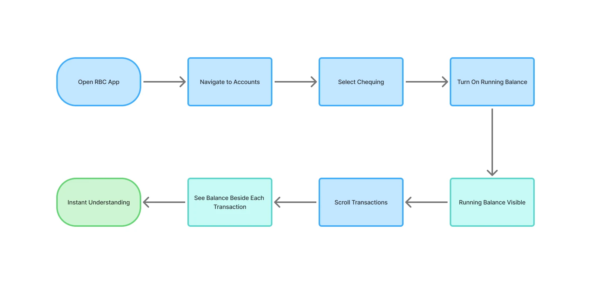
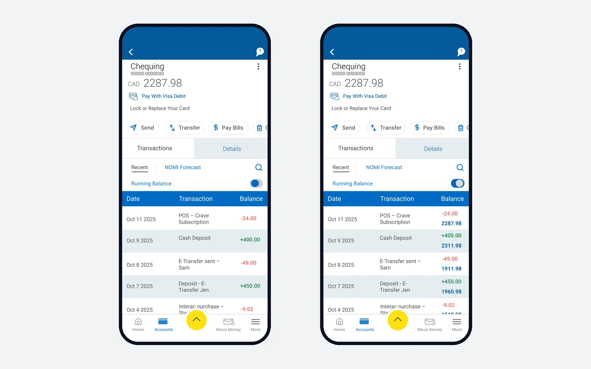
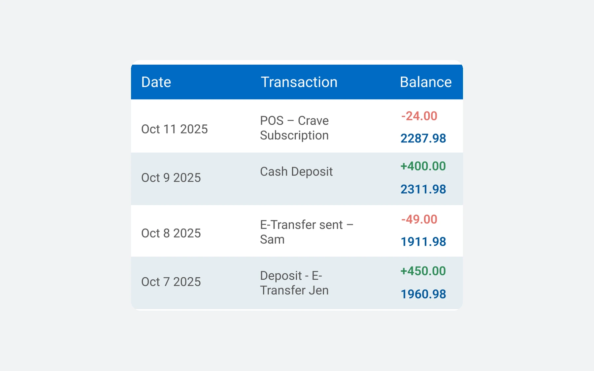
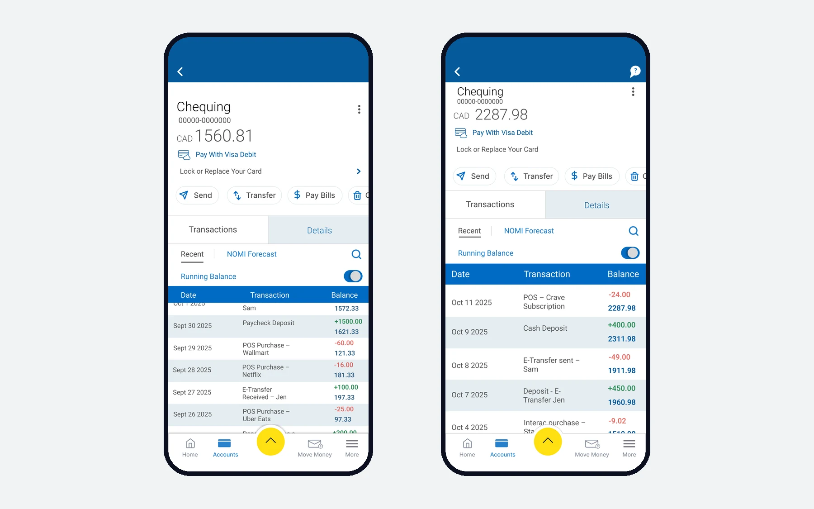
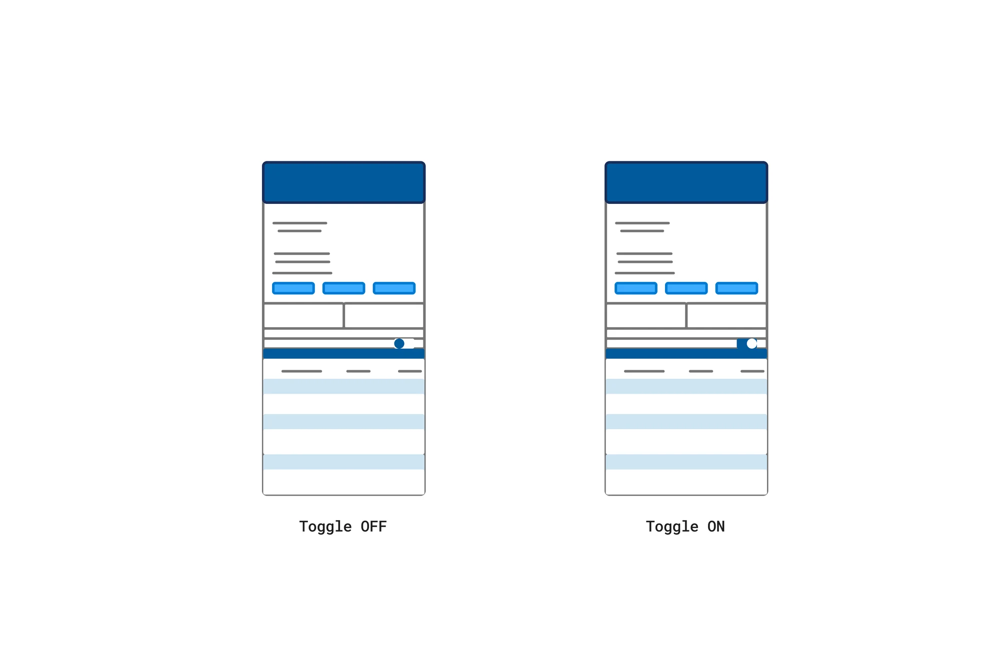
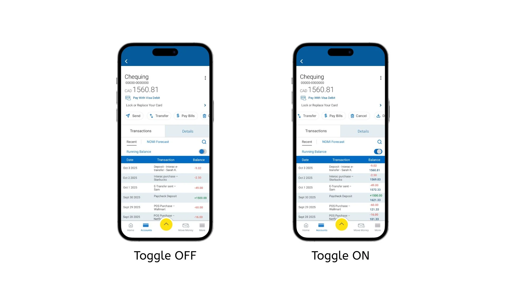
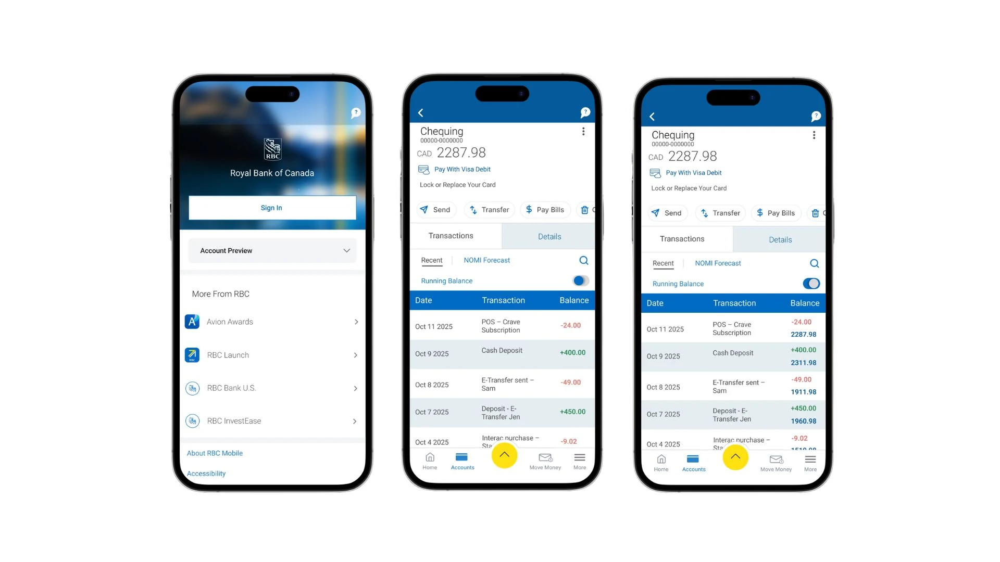

Mobile Banking App
RBC Mobile
A running balance for the transactions page, so every purchase shows what is left.
Role
Product Designer
University project
Scope
Heuristic evaluation to tested prototype
Testing
5 participants
Moderated sessions
Tools
Figma · FigJam · Notion
A concept redesign made as coursework. It is not affiliated with RBC.

At a glance
The problem
The transactions page shows one balance at the top. To know what was left after any single purchase, people have to work it out in their heads.
My role
A university case study. I ran the heuristic evaluation, mapped the task flow, designed two versions of the feature and tested them with users.
The result
A Running Balance toggle, tested in five moderated sessions. Participants found it easily and consistently preferred the second version.
01 · The challenge
One balance at the top, mental math for the rest
People open the transactions page to confirm purchases and see how their balance moved. The original design gives them a single static number, so checking any one transaction means adding and subtracting by hand.
A heuristic evaluation pointed to four principles the page works against.
Visibility of system status
The balance after each transaction is never shown.
Recognition over recall
People must remember and calculate.
Error prevention
Mental math invites mistakes with money.
Match with the real world
A bank statement shows a balance on every line.


02 · Key decisions
Three decisions behind one small feature
01
A toggle, not a permanent column
Running Balance is a switch above the list. Off, the page looks the way RBC customers already know it. On, every row gains its balance.
It keeps the simple view for people who want it. In testing, participants liked being able to switch between the simple and the detailed view.

02
The balance sits under each amount
Each row shows the amount first and the balance after it directly below. Money out is red, money in is green and the running balance is dark blue.
Two numbers in one row can be confused. Giving the balance its own colour and position keeps them apart, and colour helped participants read changes quickly.

03
The list got more room
The first version gave the transaction list only half the screen, with small type and a cramped balance. The second tightened the account header, raised the list and enlarged the type.
The list is the reason people open this page. The taller list and larger type improved readability in testing.

03 · Iteration
From wireframe to final
The idea was settled as a wireframe first, then built twice in high fidelity. The design stays inside RBC's existing visual style, so the feature reads as part of the app.



04 · Testing
Tested in five moderated sessions
Each session ran over Zoom for 15 to 20 minutes. Participants opened the Chequing account, turned Running Balance on, scrolled the list, turned it off to compare, and then named the balance after a specific transaction.
What testing showed
- Participants found the toggle easily.
- The taller list and larger type were easier to read.
- Colour helped them read changes quickly.
- The second version felt clearer and closer to how a banking app should behave.
What changed after
- More spacing under section headers.
- Stronger contrast on the running balance numbers.
- A little more padding in each transaction row.
- Tighter alignment across the page.
05 · Takeaway
One toggle and one number per row
The whole redesign adds a single control and a single line of information. Working inside an established product taught me that the restraint is the design. The job was to remove the mental math without changing what people already know.